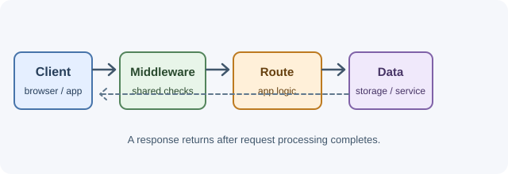

Backend Development¶
Backend development is the work of building the server side of an application: the code that receives requests, applies business rules, stores and reads data, talks to other services, and returns reliable responses. Users rarely see the backend directly, but every login, payment, search, upload, and notification depends on it.
A backend is more than "an API". It decides who a caller is and what they may do, validates every input it receives, keeps data consistent when many requests arrive at once, survives slow or failing dependencies, and records enough information for developers to understand what happened when something goes wrong.

What this section teaches¶
You will learn how to:
- Explain what a backend is responsible for and trace one request from the browser to the database and back.
- Use the HTTP protocol precisely: methods, every important status code, headers, caching, and CORS.
- Run JavaScript on the server with Node.js and understand its runtime, event loop, modules, streams, and processes.
- Build APIs with Express: routing, middleware, validation, error handling, authentication, uploads, security, testing, and production setup.
- Design APIs that are consistent, versioned, documented, and safe to retry.
- Apply the concepts every backend needs: authentication and authorization, sessions and tokens, OAuth, rate limiting, logging, background jobs, real-time communication, file storage, and configuration.
How a backend handles a request¶
- A client sends an HTTP request, such as
POST /api/orders, to a server. - Infrastructure in front of the application (a CDN, load balancer, or reverse proxy) forwards the request to an application instance.
- Middleware runs shared steps: parsing the body, logging, checking the caller's identity, and applying rate limits.
- The router matches the method and path to a handler.
- The handler validates the input and calls the business logic.
- The business logic reads or writes data in a database, cache, queue, or external service.
- The server returns a status code, headers, and a body that describe the result, and errors are turned into consistent error responses.
Node.js and Express do not replace these ideas. They are one practical way to implement them, and the same concepts apply to backends written in other languages and frameworks.
Learning path¶
The navigation is organized into three subject groups:
- Node.js: the JavaScript runtime that executes server code.
- Express: a minimal web framework built on Node.js for routing and middleware.
- Important Backend Concepts: protocol, API, security, and reliability knowledge that applies to any backend stack.
A useful order for a first pass is:
- Read Backend Fundamentals and Client-Server Model and Request Lifecycle.
- Learn the HTTP vocabulary: HTTP Methods, HTTP Status Codes, and HTTP Headers.
- Work through Node.js from the runtime to streams and processes.
- Build APIs with Express.
- Return to the remaining backend concepts, such as CORS, authentication, rate limiting, and background jobs, and apply each one in your Express project.
Every lesson includes an explanation of how the concept works, practical examples, best practices, important terminology, common mistakes, revision questions, and official learning resources. Each subject ends with interview questions and answers.
Related sections¶
Some backend topics have their own sections in these notes:
- Networking and Protocols for DNS, TCP, TLS, HTTP versions, and WebSockets at the protocol level.
- Databases for data modeling, queries, indexes, and transactions.
- Application Architecture for caching, Redis, message queues, and scalability.
- Servers and Infrastructure for Nginx, reverse proxies, and load balancing.
- DevOps and Deployment for Docker, CI/CD, environment variables, and monitoring.
- Security and Testing for OWASP, API security, and testing strategy.
A first practical exercise¶
Build a small task API with Node.js and Express:
GET /tasksreturns a list, andPOST /taskscreates a task.- Return
201 Createdfor a new task,400 Bad Requestfor invalid input, and404 Not Foundfor a missing task. - Add a logging middleware and a central error handler.
- Call the API from a page on a different port and fix the CORS error you see in the browser console.
Then use curl -i to inspect the status line and headers of each response.
Before moving on¶
- What responsibilities belong to a backend rather than a frontend?
- Which steps does a request pass through before reaching a route handler?
- Why should every input from a client be validated on the server, even when the frontend already validates it?
- Why are Node.js and Express tools for applying backend concepts rather than the concepts themselves?